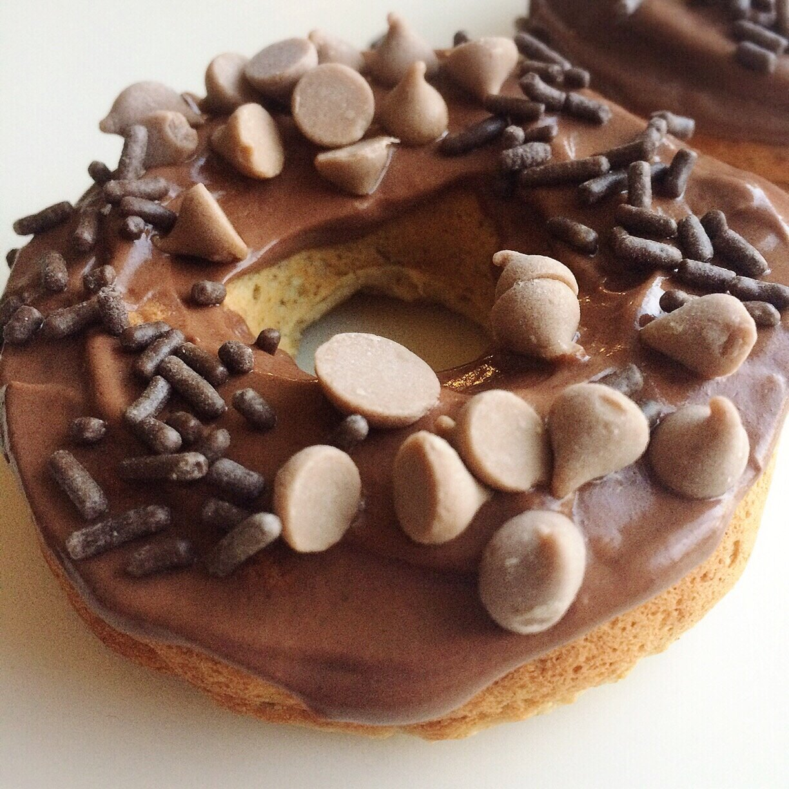
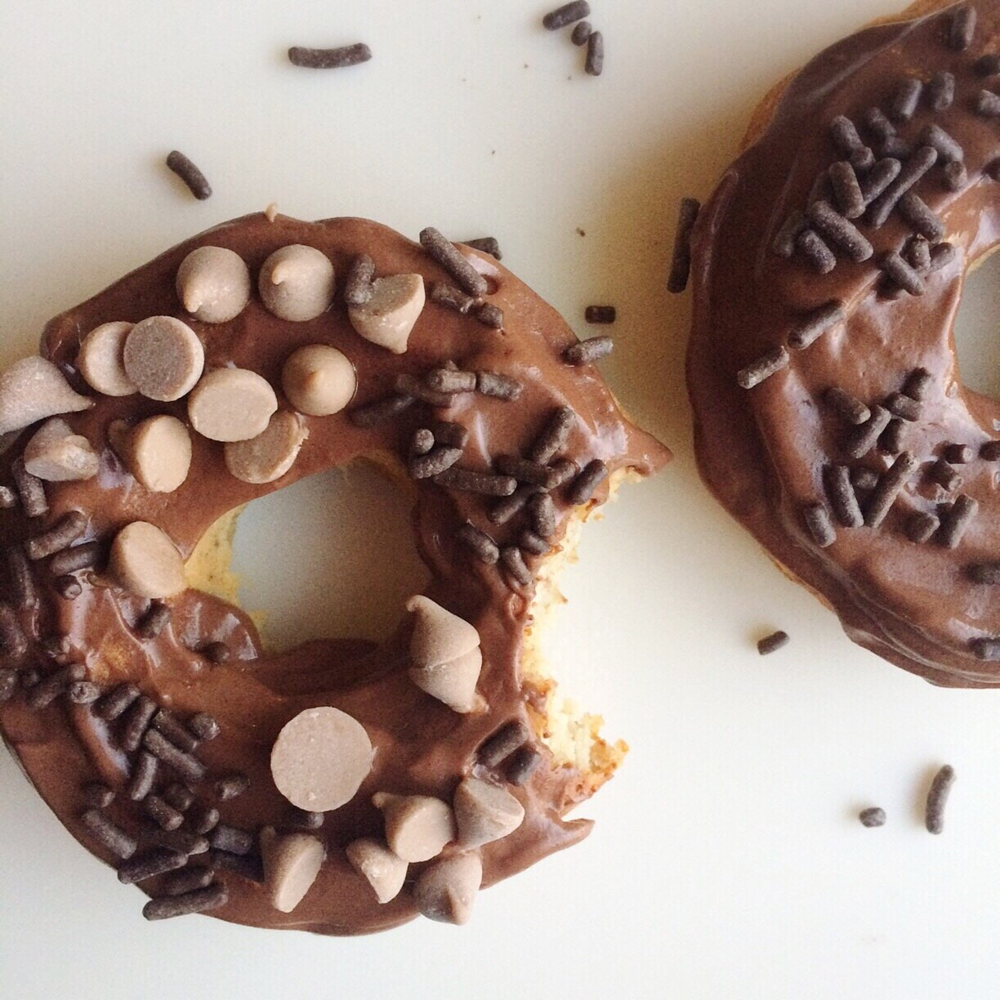
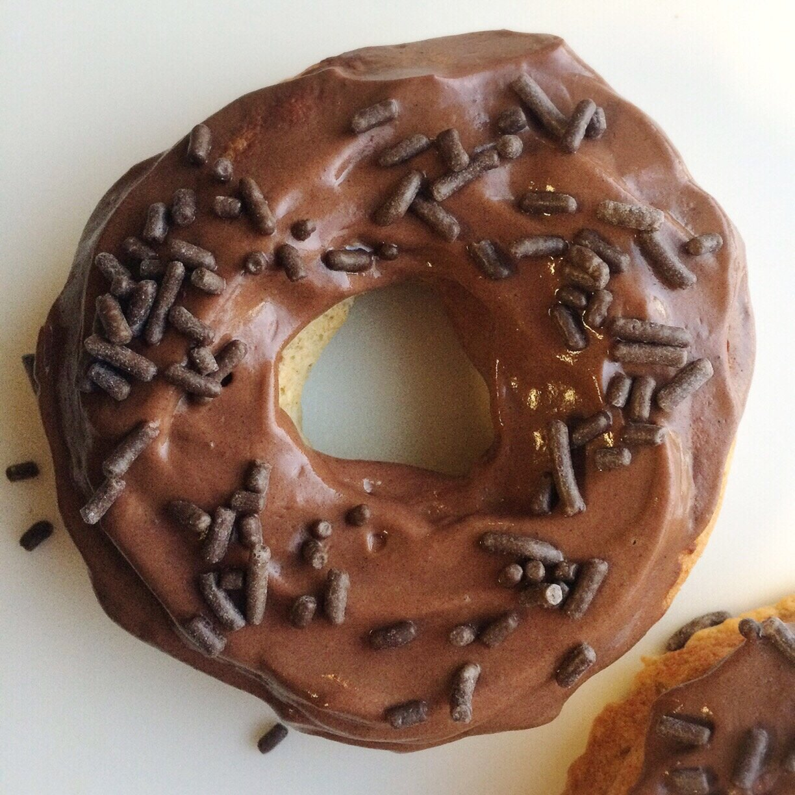

Vegan Caramel Donuts (gluten free)



Vegan caramel donuts. Plus chocolate. Let's just take this in for a minute. They're gluten free, healthy, and even have added protein!
Let's talk about protein and carbs. You guys know how much I loved baking with protein powder. I still do! Protein powders add so much opportunity for variety & creativity. But I no longer bake with whey protein, and I no longer overdose on protein every day. It's good, of course, but the sheer magnitude of it I used to get was crazy. I like my balance now and can't express enough how great I feel with the abundance of carbs in relation to protein. Check out my video on youtube where I go into macronutrients & my opinion, now after my personal experience with adverse health effects. I talk how about how much is enough protein, if I eat too many carbs, and what my macro split is now! When I dooo use protein, Nuzest is my favorite I've found. The vanilla is a nice neutral flavor for baking or smoothies!
Things are happening. Today was a big day. More changes in my life, once again, but good this time! Coming back to stability. And sanity ._. I still can't explain everything 100% so um yeah sorry I even mentioned it XD but I'm so excited and I swear I'll explain soon. You can tell clearly I can't keep secrets long. It won't go on much longer before I slip everything out!
I was experimenting in the kitchen with low expectations of the results (since vegan donuts & waffles seem to be THE DEATH OF ME), but now we're here. Holy crap. These donuts are sooo goooood. This recipe just makes 2 donuts (140 ish cals each) since I was thinking it was a small experiment. It's a good recipe for a personal-sized treat but feel free to scale it up for ALL THE DONUTSSS.
Vegan Caramel Donuts (gluten free)
Makes: 2 donuts
-
1/3 cup raw oats
-
1 TBSP almond flour
-
1 scoop Nuzest plant based protein (13 g)
-
1/3 cup unsweetened almond milk
-
1 stevia packet
-
1/2 tsp baking powder
-
1 TBSP dairy free caramel chips (brand I bought is King David, but it states "may contain gluten"- be wary.)
-
Grind the oats into a flour. Then add it to the remaining ingredients into a bowl and mix until even.
-
Spray a donut tray with nonstick spray and pour your batter between 2 molds. Bake at 350 F for 10-12 minutes.
-
Make an icing! You can really use whatever mixture you like, but I think chocolate & caramel pairs oh so divinely. For my topping, I mixed 1.5 oz dairy free yogurt (favorite is Silk brand), 1 TBSP unsweetened cocoa powder, and 1 stevia packet. This was enough icing for 2 (maybe 3!) donuts.
-
Enjoy!